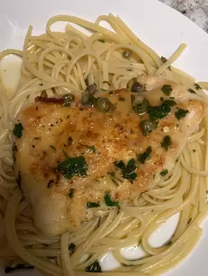

Chicken Piccata

Description
These quick and easy pan-fried chicken breasts are topped with a
simple pan sauce made with capers, butter, wine, and lemon juice.
Ingredients
- 4 skinless, boneless chicken breast halves
- cayenne pepper, or to taste
- salt and ground black pepper to taste
- all-purpose flour for dredging
- 2 tablespoons olive oil
- 1 tablespoon capers, drained
- 1/2 cup white wine
- 1/4 cup fresh lemon juice
- 1/4 cup water
- 3 tablespoons cold unsalted butter, cut in 1/4-inch slices
- 2 tablespoons fresh Italian parsley, chopped
Steps
- Place chicken breasts between 2 layers of plastic wrap and
pound to about 1/2-inch thick.
- Season both sides of chicken breasts with cayenne, salt,
and black pepper; dredge lightly in flour and shake off excess.
- Heat olive oil in a skillet over medium-high heat. Place
chicken in the pan, reduce heat to medium, and cook until
browned and cooked through, about 5 minutes per side; remove
to a plate.
- Cook capers in reserved oil, smashing them lightly to release
brine, until warmed though, 30 seconds.
- Pour white wine into skillet. scrape any browned bits from the
bottom of the pan with a wooden spoon. Cook until reduced by
half, about 2 minutes.
- Stir lemon juice, water, and butter into the reduced wine
mixture; cook and stir continuously to form a thick sauce,
about 2 minutes. Reduce heat to low and stir parsely through
the sauce.
- Return chicken breasts to the pan cook until heated through,
1 to 2 minutes. Serve with sauce spooned over the top.